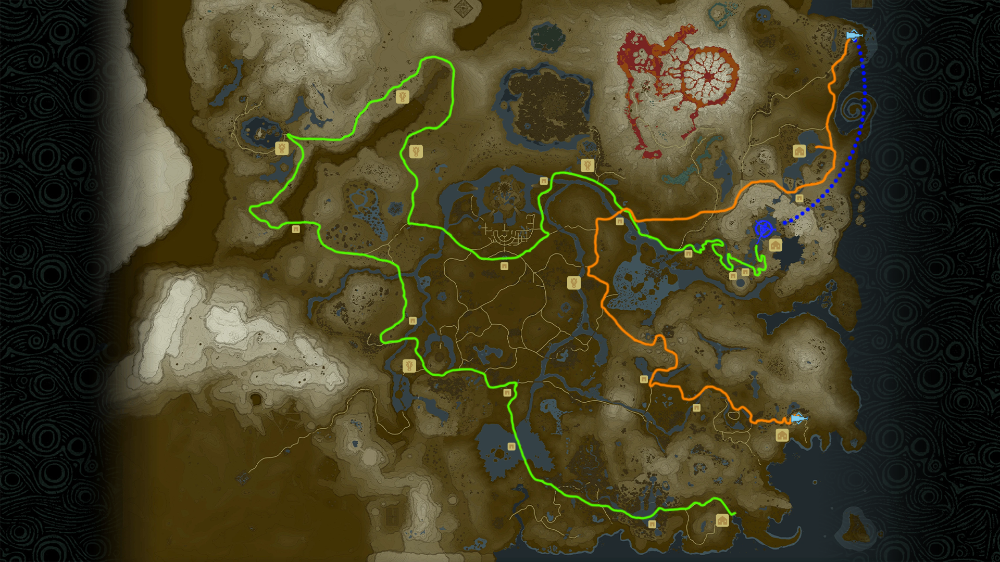

Hyrule Bike Challenge
Leaderboard
Hyrule Bike Challenge is a speedrun where you drive the Master Cycle 0 around Hyrule and hit various key checkpoints
These checkpoints are:
- Lurelin Village
- Floria Bridge
- Bridge of Hylia
- Outpost Ruins
- Outskirt Stable
- Sanidin Park Ruins
- Tabantha Great Bridge
- Rito Stable
- Snowfield Stable
- Serenne Stable
- Sacred Ground Ruins
- Helmhead Bridge
- Woodland Stable
- Inogo Bridge
- Oren Bridge
- Luto's Crossing
- Akkala Ancient Tech Lab
- Tarrey Town
- West Sokkala Bridge
- Thims Bridge
- Wetland Stable
- Kakariko Village
- Kakariko Bridge
- Fort Hateno
- Hateno Ancient Tech Lab
The route is this:

You warp from Zora's Domain to Akkala Ancient Tech Lab; the only warp allowed in the run
Any route can be taken in between checkpoints as long as they are done in the correct order